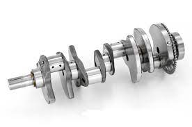

Les moteurs 4 temps qui fonctionne dans un sytème de 4 étapes:
-admission ( de l'air et du carburant)
-compression
-explosion
-échappement (des gaz)

Les moteurs 2 temps qui fonctionnent en réalité en 3 étapes:
-admission( de l'air et du carburant)+échappement(des gaz)
-compression
-explosion
-échappement

Le principe de fonctionnement est fondamentalement le même pour tous les moteurs :
-Le carburant est brûlé sous haute pression sous forme de mélange air-carburant inflammable dans une explosion.
-L’expansion soudaine met un piston en mouvement. Ce mouvement est ensuite guidé vers le moteur du véhicule.
-Dans la plupart des voitures, un moteur à piston alternatif se trouve généralement sous le capot, en combinaison avec une bielle et un vilebrequin.
